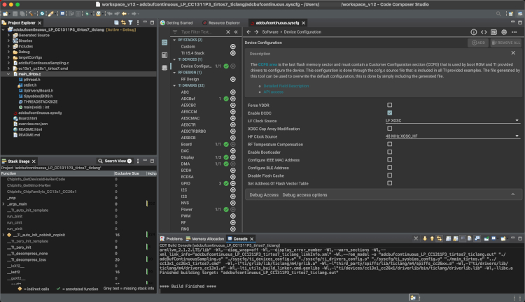
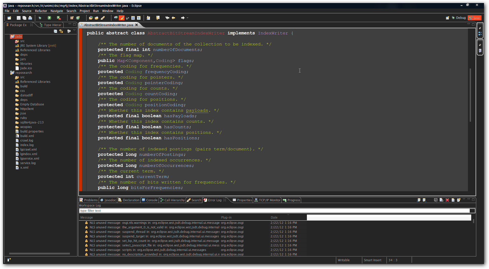

Lower CASE tööriistad keskenduvad tarkvaraarenduse lõppfaasi toetamisele. Need tööriistad aitavad läbi viia detailseid süsteemi disaini töid,
süsteemi rakendamist ja süsteemi toe tagamist pärast arenduse lõppu. Lower CASE tööriistad on suunatud koodi genereerimisele ja tarkvara testimisele,
et tagada süsteemi stabiilsus ja tõhusus lõppkasutaja jaoks.
Olen ise kasutanud järgmisi Lower CASE tööriistu:
Code Composer Studio on integreeritud arenduskeskkond (IDE), mida kasutatakse tihti madala taseme süsteemide arendamiseks, näiteks mikrokontrollerite
ja kiipide arendamiseks. See on eriti populaarne süsteemide disaini ja koodigeneratsiooni tööriist madala taseme arendajate seas.
Mis saab teha: Code Composer Studio võimaldab arendajatel luua ja testida madala taseme koodipõhiseid rakendusi, kusjuures tööriist
toetab erinevaid mikrokontrollerite platvorme ja arenduskeeli, samuti hõlmab seda koodigeneratsioon ja täpsed testimisvõimalused.


Eclipse on üks kõige populaarsemaid arendustööriistu, mida kasutatakse laialdaselt Java ja teiste programmeerimiskeelte arendamiseks. Eclipse on integreeritud arenduskeskkond,
millel on lai valik pluginaid ja tööriistu, mis toetavad koodigeneratsiooni, täiendavat testimist ja tarkvara kvaliteedi tagamist.
Mis saab teha: Eclipse IDE võimaldab arendajatel luua, testida ja hooldada tarkvara erinevates keeltes, luues kõrgelt optimeeritud ja hästi testitud koodipõhiseid lahendusi.
Eclipse pakub ka tugeva testimisraamistiku ja tööriistade kogumi, mis aitab tagada koodi kvaliteedi igas arendusfaasis.

Code Composer Studio kohta leidsin infot siit
Eclipse kohta leidsin infot siit
Lowercase vahendite kohta leidsin infot siit